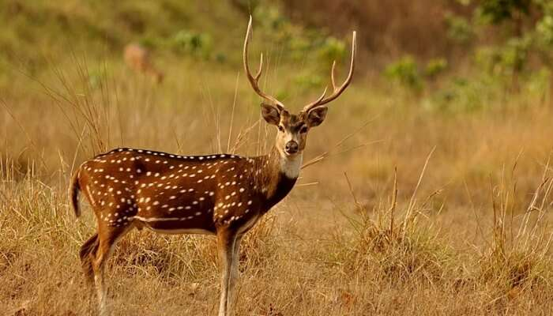

Places to visit in Kasaragod

Kasaragod, also known as Kasargod, is an offbeat getaway of Kerala. Tucked in the Western Ghats’ hills, this tourist spot offers enriched history, Eye-pleasing nature, the culture, and folklore cladded experiences to its tourists.The whole place is tied by harmony, be it natural, be it communal. Friendly locals, temples, stunning mosques, and churches will give you an idea of the modern Kasargod. On the other hand, places to visit in Kasargod include tranquil beaches of the Arabian Sea, Kerala backwaters, mighty forts, and Western Ghats’ hidden spots and the wildlife sanctuary calmly presents itself in front of its visitors.
- Malom Wildlife Sanctuary 
- Bekal Fort
- Mallikarjuna Temple
- Veliyaparamba
- Ranipuram
This seldom explored wildlife sanctuary is one of the hidden Kasaragod attractions. The lush green hills of this sanctuary are the home of exotic flora and fauna. Tourists wishing to witness the rich wildlife of Molam can spot animals like elephants, bison, tigers, deer, and many more, may find this sanctuary a blissful place. Being home to more than 200 birds, this place is a heaven for birdwatchers.
Location: 64 kilometers away from Kasaragod.

As one of the unique yet best places to visit in Kasaragod, Bekal fort stands firm in its place. Standing at the mighty Arabian Sea banks, this 300 years old palace tells a tale of persistence, resistance, and power. It is the largest Fort in Kerala and was built by the Shivappa Nayaka of Keladi in 1650 AD. This place is a must-visit for tourists wishing to relive the charm of the bygone era.
Location: Kasaragod Road, PO Bekal Fort, Beside Bekal Fort Railway Station Dist, Bekal, Kerala 671316

Kasaragod visiting places are considered as one of the most popular tourist spots and are known as the heart for peaceful temples of Lord Shiva. Situated in the middle of Kasaragod city, the devotees of this temple daily pray to Lord Shiva. Built by the Iyer Kings, this temple is open to all to visit and witness the holy idol of Lord Shiva. The temple is not only a fine piece of architecture but also beholds beautiful paintings in its wall.
Location: Kasaragod, Kerala 671123.
The backwaters of God’s own country is a symbol of an exotic and serene holiday experience. If you are a person who seeks nature’s bliss in seclusion, this is your destination. This coastal island also has the Bekal hole aqua park, for your dose of water sports amusement.
Location: Hosdurg taluk, Kasaragod district, Kerala state, India.

Situated 780m above sea level, Ranipuram, which is also, known as Madathumala, is famous for its trekking trails and varied vegetarian, which includes evergreen Shola woods, monsoon forests and grasslands. Its beauty and bounty of nature is comparable to Ootty
Location:Kasaragod district, Kerala state, India.